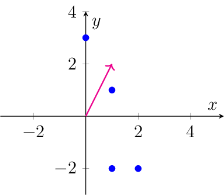

Exercises#
SVD#
Let’s have a look at a very simple movie ratings matrix of six users and four movies:
\[\begin{align*} D=\begin{pmatrix} 5 & 5 & 1 & 1\\ 5 & 5 & 1 & 1\\ 5 & 5 & 1 & 1\\ 1 & 1 & 5 & 5\\ 1 & 1 & 5 & 5\\ 5 & 5 & 5 & 5 \end{pmatrix} \end{align*}\]Which patterns of movie preferences can you detect in the matrix \(D\)?
Can you denote a rank-2 factorization of \(D\) which reflects the assignment of users to the patterns you found?
Compute a rank-2 truncated SVD of \(D\). Do the movie patterns denoted by the SVD solution reflect the patterns you identified?
The matrix has two obvious movie patterns. The first pattern is \((5,5,1,1)\), indicating that movie 1 and 2 is liked (rated with 5/5 stars) and the last two movies are not liked (rated with 1 of 5 stars). The second pattern is \((1,1,5,5)\), indicating that the first two movies are not liked and the last two are liked. The last user likes all movies, which could be understood like he belongs to both patterns. In fact, we can write the matrix \(D\) as the following rank-2 MF:
(63)#\[\begin{align} D\approx\begin{pmatrix} 5 & 5 & 1 & 1\\ 5 & 5 & 1 & 1\\ 5 & 5 & 1 & 1\\ 1 & 1 & 5 & 5\\ 1 & 1 & 5 & 5\\ 4.8 & 4.8 & 4.8 & 4.8 \end{pmatrix} = \begin{pmatrix} 1 & 0\\ 1 & 0\\ 1 & 0\\ 0 & 1 \\ 0 & 1 \\ 0.8 & 0.8 \end{pmatrix} \begin{pmatrix} 5 & 5 & 1 & 1\\ 1 & 1 & 5 & 5 \end{pmatrix}. \label{eq:patternDecomp} \end{align}\]This particular factorization will yet not be found by SVD, since the rows in the second factor matrix are not orthogonal.
The truncated SVD yields:
\[\begin{align*} U_{\cdot \{1,2\}} \Sigma_{\{1,2\}\{1,2\}} V_{\cdot \{1,2\}}^\top= \begin{pmatrix} 0.4 & -0.4\\ 0.4 & -0.4\\ 0.4 & -0.4\\ 0.3 & 0.5\\ 0.3 & 0.5\\ 0.6 & 0.1 \end{pmatrix} \begin{pmatrix} 16.8 & 0\\ 0 & 8.8 \end{pmatrix} \begin{pmatrix} 0.6 & 0.6 & 0.4 & 0.4\\ -0.4 & -0.4 & 0.6 & 0.6 \end{pmatrix} \end{align*}\]We see that the decomposition of SVD is quite different from the one in Eq.~\eqref{eq:patternDecomp}. The first pattern \(V_{\cdot 1}\) indicates more general information of the data, like movie popularity. Since there are more users who like movies 1 and 2 than users who like movies 3 and 4, movies 1 and 2 get a slightly higher score of 0.6 (vs. 0.4) in the first pattern \(V_{\cdot 1}\). The second pattern \(V_{\cdot 2}\) indicates the duality in taste of movies 1,2 and 3,4 by the sign (-0.4 vs. 0.6). Likewise, we recognize the difference between users in the matrix \(U\). There are three user patterns: \((0.4, -0.4)\), \((0.3,0.5)\) and \((0.6,0.1)\).
Consider the movie recommendation matrix from the lecture, whose missing values are imputed with the mean value of \(\mu=3\):
\[\begin{align*} D=\begin{pmatrix} 5 & \mu & 1 & 1 \\ \mu & 1 & 5 & \mu \\\ 2 & 1 & 5 & 3 \\ 4 & \mu & 4 & 2\\ 5 & 5 & \mu & 1 \\ \mu & 1 & 5 & 3 \end{pmatrix} \end{align*}\]In the example of the lecture, we have used a rank of 2. Try using a rank of 1, 3 and 4 and evaluate the obtained recommendations. Which rank would you choose?
For this example, a rank of 2 is indeed the best fit. The rank-1 truncated SVD is given as follows:
\[\begin{align*} U_1\Sigma_1V_1^\top = \begin{pmatrix} 2.9 & 2.0 & 3.2 & 1.8\\ 3.3 & 2.2 & 3.6 & 2.0\\ 3.3 & 2.2 & 3.6 & 2.0\\ 3.8 & 2.6 & 4.2 & 2.3\\ 4.0 & 2.8 & 4.4 & 2.5\\ 3.6 & 2.5 & 4.0 & 2.2 \end{pmatrix}. \end{align*}\]This factorization is not able to approximate the known movie preferences, and hence, we can not derive suitable predictions from this model. The rank 2 factorization is known from the lecture and can be used to give recommendations:
\[\begin{align*} U_2\Sigma_2V_2^\top =\begin{pmatrix} 4.4 & 3.7 & 1.4 & 0.6\\ 2.1 & 0.9 & 5.0 & 2.9\\ 2.1 & 0.9 & 5.0 & 2.9\\ 4.1 & 2.9 & 3.9 & 2.1\\ 5.5 & 4.4 & 2.7 & 1.3\\ 2.7 & 1.4 & 5.1 & 3.0 \end{pmatrix}. \end{align*}\]The rank of 3 and 4 factorizations of the truncated SVD are adapting too well to the data. We have
\[\begin{align*} U_3\Sigma_3V_3^\top &=\begin{pmatrix} 5.0 & 3.0 & 1.0 & 0.9\\ 2.0 & 1.0 & 5.0 & 2.9\\ 2.0 & 1.0 & 5.0 & 2.9\\ 4.0 & 3.0 & 4.0 & 2.1\\ 5.0 & 5.0 & 3.0 & 1.0\\ 3.0 & 1.1 & 4.9 & 3.1 \end{pmatrix}\\ U_4\Sigma_4V_4^\top &=\begin{pmatrix} 5.0 & 3.0 & 1.0 & 1.0\\ 2.0 & 1.0 & 5.0 & 3.0\\ 2.0 & 1.0 & 5.0 & 3.0\\ 4.0 & 3.0 & 4.0 & 2.0\\ 5.0 & 5.0 & 3.0 & 1.0\\ 3.0 & 1.0 & 5.0 & 3.0 \end{pmatrix}. \end{align*}\]The imputed mean values are almost perfectly approximated and can this factorization can hence not be used to provide recommendations.
Show that the minimum approximation error of a rank-\(r\) matrix factorization of the data \(D\in\mathbb{R}^{n\times d}\) is equal to the sum of the \(\min\{n,d\}-r\) smallest singular values of \(D\):
\[\sigma^2_{r+1}+\ldots+\sigma^2_{\min\{n,d\}}=\min_{X,Y}\lVert D -YX^\top\rVert^2 \quad \text{s.t. } X\in\mathbb{R}^{d\times r},Y\in\mathbb{R}^{n\times r}.\]We have seen in the lecture that the global minimizers \(X\) and \(Y\) of the rank-\(r\) matrix factorization problem satisfy
\[YX^\top = U_{\cdot \mathcal{R}}\Sigma_{\mathcal{R}\mathcal{R}}V_{\cdot \mathcal{R}}^\top,\]where \(D=U\Sigma V^\top\) is the singular value decomposition of \(D\) and \(\mathcal{R}=\{1,\ldots,r\}\). We define the matrix\[\begin{split}\Sigma_0 = \left( \begin{array}{c;{2pt/2pt}r} \Sigma_{\mathcal{R}\mathcal{R}} & \vvec{0} \\ \vvec{0} & \vvec{0} \end{array} \right) \in\mathbb{R}^{n\times d}.\end{split}\]That is, we create the matrix \(\Sigma_0\) by attaching \(n-r\) constant-zero rows and \(d-r\) constant-zero columns. Then, we can write\[YX^\top = U\Sigma_0V^\top.\]Due to the orthogonal invariance of the Frobenius norm, we have\[\begin{align*} \lVert D -YX^\top\rVert^2 &= \lVert U\Sigma V^\top -U\Sigma_0 V^\top \rVert^2\\ &=\lVert U^\top(U\Sigma V^\top -U\Sigma_0 V^\top) V \rVert^2\\ &=\lVert \Sigma - \Sigma_0 \rVert^2 \\ &=\sigma^2_{r+1}+\ldots +\sigma^2_{\min\{n,d\}} \end{align*}\]
PCA#
Show that the constraint \(Z^\top Z=I\) for \(Z\in\mathbb{R}^{n\times r}\), \(r<n\) which is imposed for the objective of PCA implies that \(Z\) has orthogonal columns which all have a Euclidean norm of one.
The constraint \(Z^\top Z=I\) implies that the entry \(s,t\) for \(1\leq s,t\leq r\) of \(Z^\top Z\) is equal to zero if \(s\neq t\) and equal to one otherwise. We have
(64)#\[\begin{align} Z^\top Z &=I\nonumber\\ \Leftrightarrow (Z^\top Z)_{s,t}=Z_{\cdot s}^\top Z_{\cdot t}&=\begin{cases} 0& \text{if } s\neq t\\ 1& \text{otherwise} \end{cases}\nonumber\\ Z_{\cdot s}^\top Z_{\cdot t}&= 0 &\text{for } 1\leq s\neq t\leq r \label{eq:ortho}\\ Z_{\cdot s}^\top Z_{\cdot s} = \lVert Z_{\cdot s}\rVert^2 &=1 &\text{for }1\leq s\leq r \label{eq:unit} \end{align}\]From Eq.~\eqref{eq:ortho} follows that the columns of \(Z\) are orthogonal and from Eq.~\eqref{eq:unit} follows that the columns of \(Z\) have a Euclidean norm of one.
We define a new feature \(\mathtt{F}_3 = \mathtt{F}_1 + 2\mathtt{F}_2\), given the following data:
\(\mathtt{F}_1\)
\(\mathtt{F}_2\)
2
-2
0
3
1
-2
1
1
Compute the sample variance of the new feature by computing the new feature values and then computing the variance of these values.
Compute the sample variance of the new feature by means of the formula derived in the lecture: \(\sigma_{\mathtt{F}_3}^2 = \frac1n\lVert (D-\mathbf{1}\mu_{\mathtt{F}}^\top )\alpha\rVert^2\)
Plot the data points and the vector \(\alpha\) which defines the new feature \(\mathtt{F}_3\). Does \(\alpha\) indicate a direction of high or low sample variance in the data? How can you compute the variance in the direction of \(\alpha\)?
Compute the variance and direction of maximum variance in the data.
We compute the new feature values \(\mathtt{F}_3\), the mean \(\mu_3=1\), and the centered feature values \(\mathtt{F}_3-\mu_3\):
\(\mathtt{F}_1\)
\(\mathtt{F}_2\)
\(\mathtt{F}_3\)
\(\mathtt{F}_3 - \mu_3\)
2
-2
-2
-3
0
3
6
5
1
-2
-3
-4
1
1
3
2
The sample variance of the new feature \(\mathtt{F}_3\) is then given as the mean value of the samples \((\mathtt{F}_3 - \mu_3)^2\), that is, we compute
\[\sigma_{\mathtt{F}_3}^2 = (3^2 + 5^2 + 4^2 +2^2)/4 = 13.5\]To compute the variance by means of the formula \(\sigma_{\mathtt{F}_3}^2 = \frac1n\lVert (D-\mathbf{1}\mu_{\mathtt{F}}^\top )\alpha\rVert^2\), we compute first the mean values of the features (\(\mu_1=1,\mu_2=0\)) and then the centered data matrix \(D-\mathbf{1}\mu_{\mathtt{F}}\):
\(\mathtt{F}_1\)
\(\mathtt{F}_2\)
\(\mathtt{F}_1 -\mu_1\)
\(\mathtt{F}_2-\mu_2\)
\(\mathtt{F}_3 -\mu_3 = \mathtt{F}_1 -\mu_1 +2(\mathtt{F}_2-\mu_2)\)
2
-2
1
-2
-3
0
3
-1
3
5
1
-2
0
-2
-4
1
1
0
1
2
Now, the variance is given as the squared \(L_2\)-norm of the samples \(\mathtt{F}_3 -\mu_3\):
\[\sigma_{\mathtt{F}_3}^2 = (3^2 + 5^2 + 4^2 +2^2)/4 = 13.5\]We plot the data points and the vector \(\alpha=(1,2)\).

The variance in the direction of \(\alpha\) is not particularly high. Geometrically, the variance would be given by projecting the points on \(\alpha\) and then having a look how much the projected samples spread. We can compute the variance by normalizing the vector \(\tilde{\alpha}=\alpha/\lVert \alpha\rVert = (1,2)/\sqrt{5}\) and then compute the sample variance of the feature \(\mathtt{F}_{\tilde{\alpha}} = \tilde{\alpha}_1\mathtt{F}_1 + \tilde{\alpha}_2\mathtt{F}_2\):
\[\sigma_{\mathtt{F}_3}^2 = \frac1n\lVert (D-\mathbf{1}\mu_{\mathtt{F}}^\top )\tilde{\alpha}\rVert^2 = (3^2 + 5^2 + 4^2 +2^2)/5/4 = 2.7\]4. We compute the direction of maximum variance in the data by the SVD of the centered data matrix. The first right singular vector \(V_{\cdot 1}=(0.27, -0.96)\) of the centered data matrix denotes the direction of maximum variance (the first principle component) and the squared first singular value divided by the number of samples denotes the variance \(\sigma_{\mathtt{F}_{V_{\cdot 1}}}^2 = 4.85\) (all values are rounded to two decimal points).
Given a data matrix \(D\in\mathbb{R}^{n\times d}\), Show that every right singular vector \(V_{\cdot k}\) of the centered data matrix \(C=D -\vvec{1}{\bm \mu_\mathtt{F}^\top }\) indicates a new feature \(\mathtt{F}_{V_{\cdot k}}= V_{1k}\mathtt{F}_1 + \ldots + V_{dk}\mathtt{F}_d\) whose sample variance is given by the corresponding squared singular value divided by the number of samples \(\sigma_k^2/n\).
We have derived in the lecture that the sample variance of a feature defined by \(\mathtt{F}_{\alpha}= \alpha_1\mathtt{F}_1 + \ldots + \alpha_d\mathtt{F}_d\) is given by
\[\begin{align*} \sigma_{\mathtt{F}_{\alpha}}^2 = \frac1n\left\lVert \left(D -\vvec{1}{\bm \mu_\mathtt{F}^\top }\right){\bm\alpha}\right\rVert^2 = \frac1n\left\lVert C{\bm\alpha}\right\rVert^2. \end{align*}\]If we choose now \(\alpha = V_{\cdot k}\), and insert the singular value decomposition of \(C=U\Sigma V^\top\), then we get
\[\begin{align*} \sigma_{\mathtt{F}_{V_{\cdot k}}}^2 & = \frac1n\left\lVert C{V_{\cdot k}}\right\rVert^2\\ & = \frac1n\left\lVert U\Sigma V^\top {V_{\cdot k}}\right\rVert^2 \\ & = \frac1n\left\lVert \Sigma V^\top {V_{\cdot k}}\right\rVert^2 & \text{(orthogonal invariance)}\\ & = \frac1n\left\lVert \Sigma \begin{pmatrix} V_{\cdot 1}^\top V_{\cdot k}\\ \vdots\\ V_{\cdot k}^\top V_{\cdot k}\\ \vdots\\ V_{\cdot 1}^\top V_{\cdot d} \end{pmatrix}\right\rVert^2 = \frac1n\left\lVert \Sigma \begin{pmatrix} 0\\ \vdots\\ 1\\ \vdots\\ 0 \end{pmatrix}\right\rVert^2 \\ &=\frac1n \sigma_k^2. &(\sigma_k = \Sigma_{kk}) \end{align*} \]Given an \(n\times d\) data matrix \(D\), gathering \(n\) observations of \(d\) features \(\mathtt{F}_1,\ldots,\mathtt{F}_d\). We define a new feature \(\displaystyle\mathtt{F}_{d+1}= \sum_{k=1}^d \alpha_k\mathtt{F}_k\).
Show that the sample mean of the new feature can be computed by the matrix-vector product \({\bm \mu_{\mathtt{F}_{d+1}}=\bm \mu_\mathtt{F}^\top \alpha}\), where \(\bm \mu_\mathtt{F}^\top = \begin{pmatrix} \mu_{\mathtt{F}_1} &\ldots & \mu_{\mathtt{F}_d}\end{pmatrix}\) gathers the sample means of all other features.
Show that the sample variance of the new feature can be computed as \(\sigma_{\mathtt{F}_{d+1}}^2 = \frac1n\left\lVert \left(D -\vvec{1}{\bm \mu_\mathtt{F}^\top }\right){\bm\alpha}\right\rVert^2\).
Given the \(n\) observations of the new feature
(65)#\[\begin{align} D_{\cdot d+1} =\sum_{k=1}^d \alpha_kD_{\cdot k}=D\bm\alpha\in\mathbb{R}^n, \label{eq:DnewF} \end{align}\]the sample mean can be computed by:
(66)#\[\begin{align} \mu_{\mathtt{F}_{d+1}} &= \frac1n \sum_{i=1}^n D_{i d+1} &\text{(Definition sample mean)}\nonumber\\ &= \frac1n\vvec{1}^\top D_{\cdot d+1} & (\mathbf{1}\in\{1\}^n \text{ is constant one vector})\nonumber\\ &= \frac1n\vvec{1}^\top D{\bm\alpha} & \text{(Eq.~\eqref{eq:DnewF})}\nonumber\\ &= \begin{pmatrix} \mu_{\mathtt{F}_1} &\ldots & \mu_{\mathtt{F}_d} \end{pmatrix} {\bm\alpha} &\text{(Computation of mean)}\nonumber\\ &= {\bm \mu_\mathtt{F}^\top \alpha},\label{eq:munewF} \end{align}\]The sample variance is computed as follows: \begin{align*} \sigma_{\mathtt{F}{d+1}}^2 &=\frac1n\sum{i=1}^n (D_{id+1}-\mu_{\mathtt{F}{d+1}})^2 &\text{(Definition sample variance)}\ &=\frac1n\Vert D{\cdot d+1} - \vvec{1}\mu_{\mathtt{F}{d+1}}\rVert^2 & (\text{Definition Euclidean norm, }\mathbf{1}\in{1}^n)\ &=\frac1n\left\lVert D{\bm\alpha} -\vvec{1}{\bm \mu\mathtt{F}^\top \alpha}\right\rVert^2 & (\text{Eq.~\eqref{eq:munewF}})\ &=\frac1n\left\lVert \left(D -\vvec{1}{\bm \mu_\mathtt{F}^\top }\right){\bm\alpha}\right\rVert^2 \end{align*}